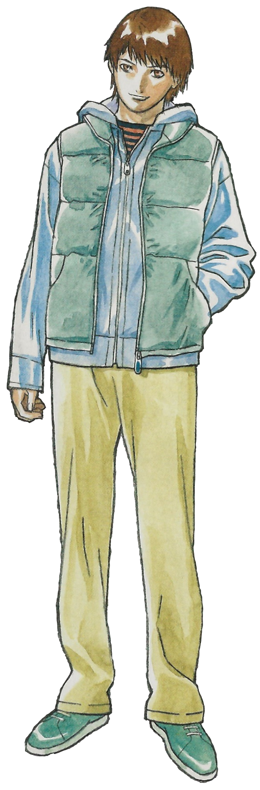
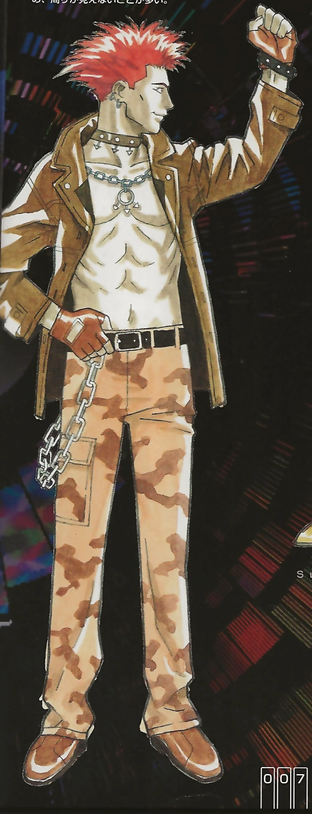
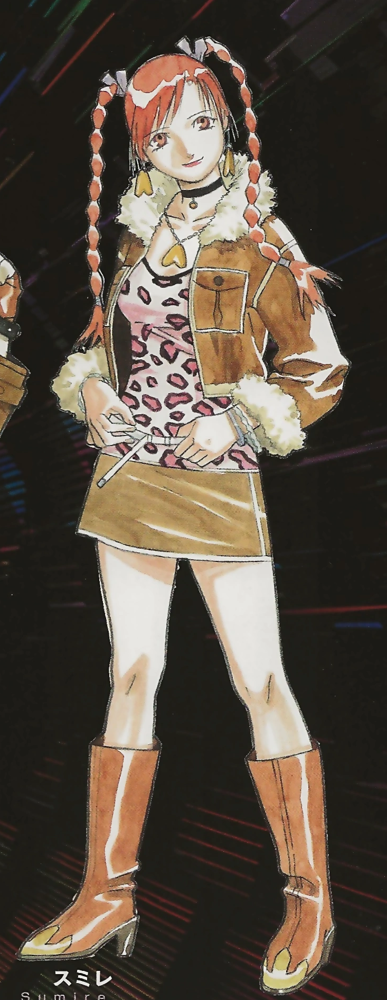
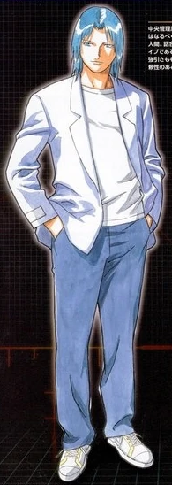
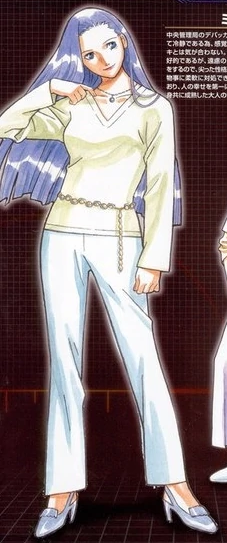
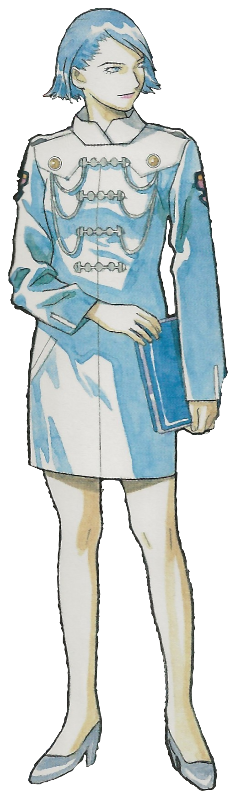
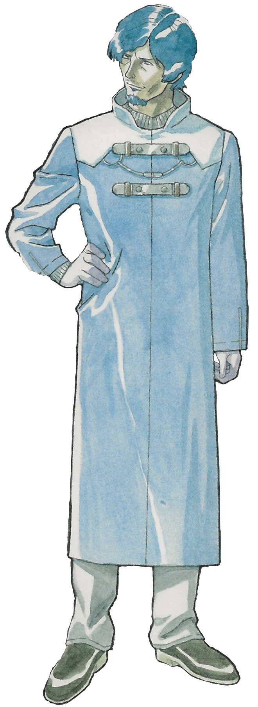
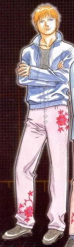
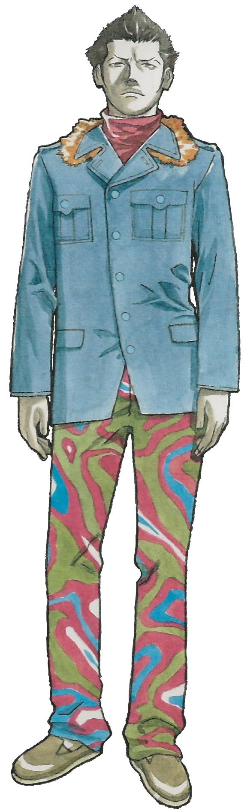
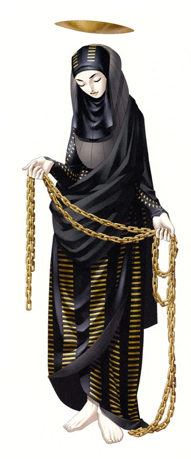

| Shin Megami Tensei NINE | |
|---|---|

|
|
| Nome original: | 真・女神転生 NINE |
| Ano de lançamento: | 2002 no Japão |
| Plataforma(s): | Xbox |
Shin Megami Tensei NINE
Shin Megami Tensei NINE é um jogo ambientado no mundo da série Shin Megami Tensei. O "NINE" no título refere-se aos nove alinhamentos do jogo. Foi lançado para o Xbox no Japão. Apesar do jogo ter sido projetado como um MMORPG, o pack do online foi cancelado um tempo depois de NINE ser lançado, essa decisão se deu principalmente pela falta de popularidade do Xbox no Japão.
| Contents |
|---|
1. Plot
Acontecendo durante o breve período em que o protagonista de Shin Megami Tensei está em outro mundo, Shin Megami Tensei NINE foca nos sobreviventes da guerra apocalíptica de 199X enquanto tentam reconstruir a sociedade. O primeiro projeto é um mundo digital destinado a recriar Tóquio antes de ser destruída pelos ICBMs, o Idea Space.
No entanto, o Idea Space possui alguns bugs conhecidos como "Ruídos" que se manifestam como entidades demoníacas. Devido à forma como o Idea Space funciona, danos infligidos no espaço virtual também afetarão o usuário no mundo real, portanto, os Ruídos devem ser eliminados como uma questão de segurança pública. O Escritório de Administração Central montou uma equipe de guerreiros, conhecidos como "Debuggers" para combater os Ruídos.
Um dia, o protagonista Kei Azuma está visitando a recriação de Shibuya no Idea Space quando uma Legião o ataca. Uma mulher misteriosa aparece e salva Azuma da Legião, e se apresenta como uma debugger... Kei então se torna um caçador de bugs, rastreando e destruindo Ruídos.
2. Personagens










